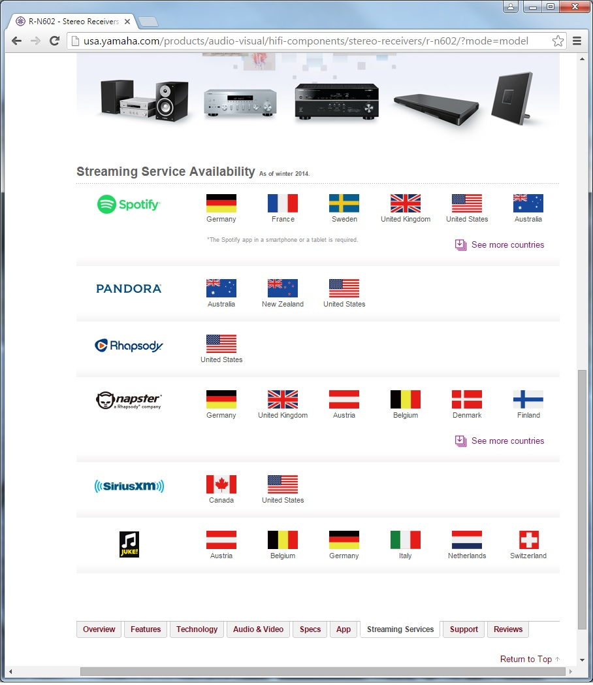
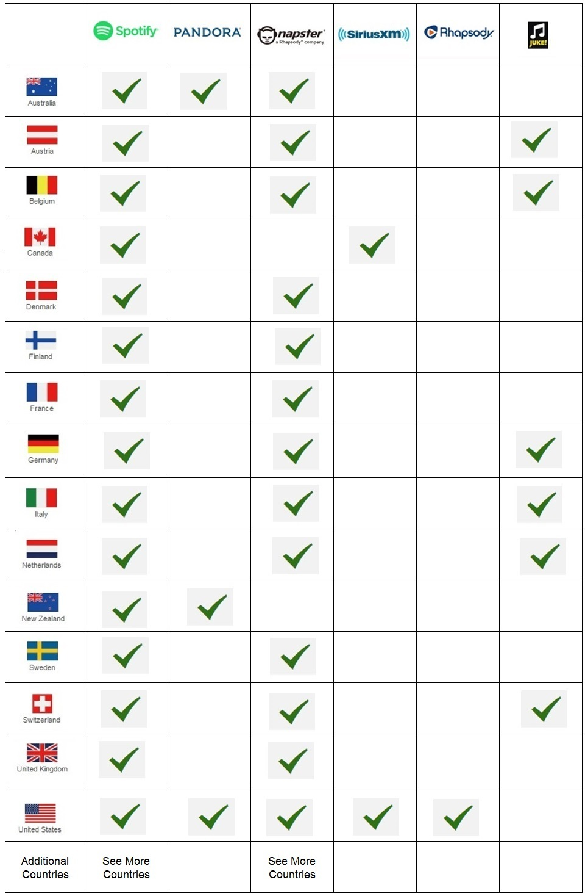

Yamaha has provided a graphic to show which steaming apps are available in various countries. This graphic is not appropriate for a consumer. As a consumer I know what country I live in and based on that information I want to see what apps are available to me. I am much more likely to change what app I use than change what country I live in. This graphic gives asks the consumer to play hide and seek for the information they want. It was a fun game as a kid, but I would rather play it with my nephew than when I’m trying to buy a new stereo.
The revised graphic allows the consumer to see what apps are available in their country at a glance:
The lesson here is to connect with your audience on their terms. When answering a question for a child, you are likely to provide an "age appropriate" response. An age appropriate response is going to consider what the child may already know and build on that while avoiding certain topics that are not appropriate for them. If we can do this for children, why can't we do it for consumers?